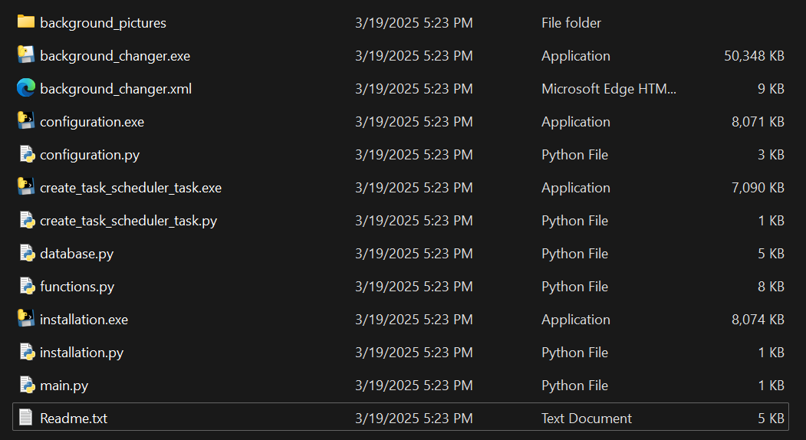

I work and study using computer in a room without a window with direct access to natural light and scenaries and I would benefit from nature for relaxation and reminder of passage of time.
A Windows application to automatically change the background every two hours, giving a subtle visual reminder of the passage of time using the pictures of nature.
 The program automatically updates the desktop background every two hours, providing a pleasant reminder of the time's passage and refreshing the user's visual experience. It functions without collecting personal data, offering both security and privacy.
Requires Windows Task Scheduler, which may need manual intervention for users with specific user rights, especially on Windows Home editions. May encounter issues with password prompts for users without appropriate permissions, requiring additional setup steps. The user interface and overall experience are basic and may not suit those seeking advanced customization features.
Explore the possibility of including a broader variety of images or integrating with a photo library service like Unsplash for better image diversity. Ensure better compatibility with all versions of Windows by handling permissions and task scheduling more automatically.